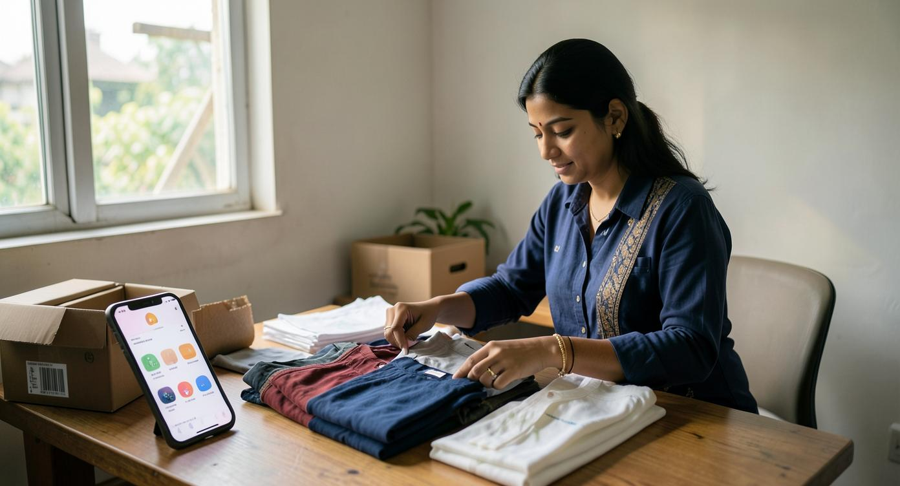
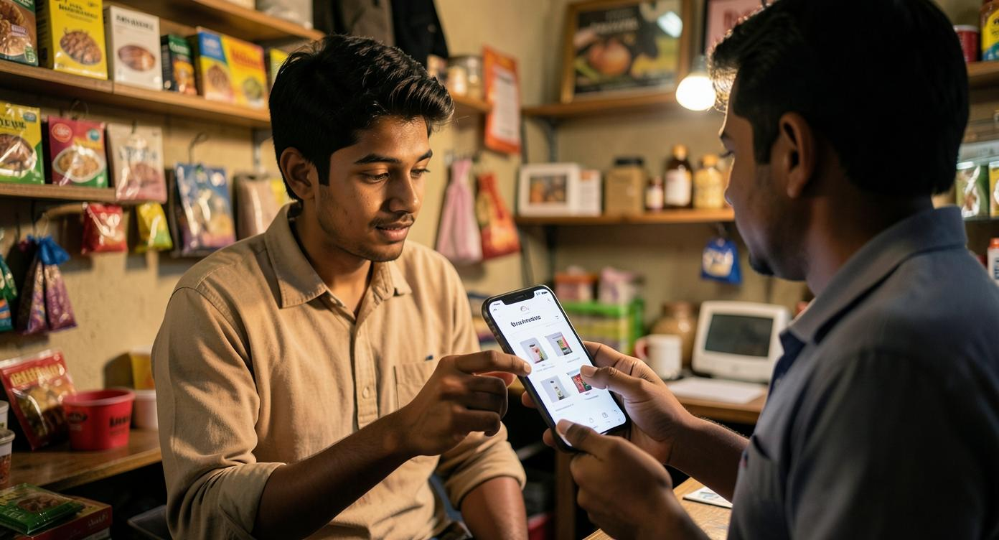
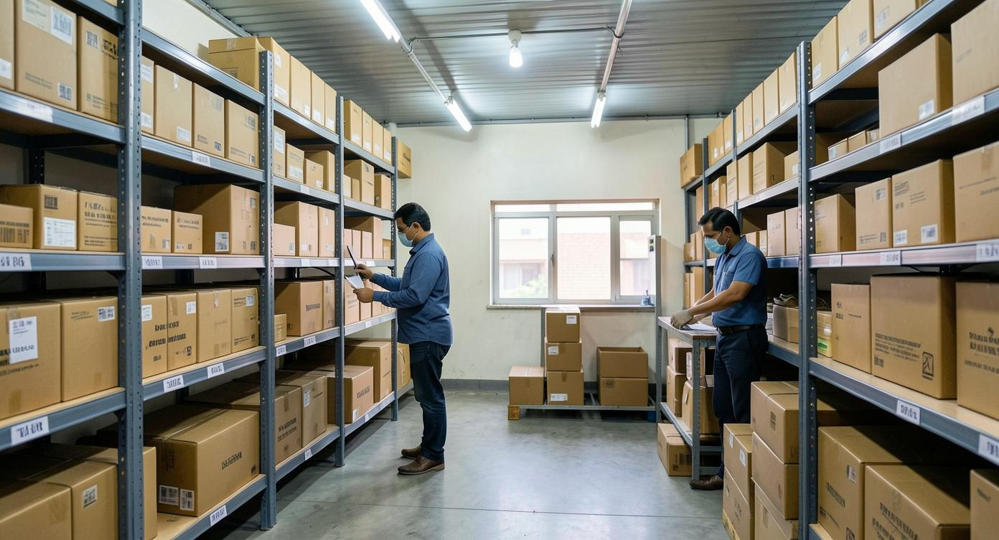

Meesho Founder Kaun Hai? Business Model aur 6 Lessons

भारत में e-commerce की कहानी आम तौर पर बड़े शहरों से शुरू होती है — फैशन, इलेक्ट्रॉनिक्स और तेज़ डिलीवरी। Meesho ने इसके उलट रास्ता चुना: छोटे शहरों की महिलाएँ, WhatsApp पर साझा किए गए catalog, और ऐसे उत्पाद जिनकी कीमत कम हो पर मार्जिन दोनों तरफ बचे। यही सोच इसे बाकी platforms से अलग बनाती है।
इस आर्टिकल में मैं बताऊँगा कि Meesho के founders कौन हैं, उनका business model असल में कैसे चलता है, शुरुआत में क्या अलग किया गया, कंपनी पैसा कैसे कमाती है, और उन छह सबक के बारे में जो भारत में किसी भी product या market-place शुरू करने वाले के लिए काम के हैं। साथ में वे चुनौतियाँ भी, जो इस मॉडल के साथ हमेशा रहती हैं।
छोटा जवाब: Meesho को Vidit Aatrey और Sanjeev Barnwal ने 2015 में शुरू किया था। इसका मॉडल सीधा ग्राहक तक बेचने का नहीं, बल्कि reseller के ज़रिए बेचने का है — कोई भी व्यक्ति अपने दोस्तों और परिवार को product का catalog भेजता है, order लेता है और कमीशन कमाता है। शुरुआत में platform ने seller से commission नहीं लिया, जिससे कीमतें कम रहीं।
Founder kaun hain
Meesho के दो founders हैं — Vidit Aatrey और Sanjeev Barnwal। दोनों ने IIT Delhi से पढ़ाई की और कुछ समय नौकरी भी की। इससे पहले उन्होंने एक app बनाया था जिसका नाम Fashnear था, जिसमें पास की दुकानों का सामान दिखाया जाता था। वह प्रयोग बड़ा नहीं चला, पर उससे एक सबक मिला जो आगे काम आया।
वह सबक यह था कि भारत में लोग product खोजने के लिए app पर निर्भर नहीं हैं — वे किसी भरोसेमंद व्यक्ति की सलाह पर खरीदते हैं। दुकानदार, दोस्त, रिश्तेदार या WhatsApp ग्रुप — भरोसा यहीं बनता है। Meesho का पूरा मॉडल इसी अवलोकन पर खड़ा है।
Naam se zyada soch
Founders की पढ़ाई और पुराने अनुभव की जानकारी सार्वजनिक है, पर असली कहानी उस सोच में है जिसने model बनाया। उन्होंने यह मान लिया कि भारत का असली बाज़ार metro शहरों में नहीं, tier 2 और tier 3 में है — और वहाँ खरीदने का तरीका अलग है।
Business model kaise kaam karta hai
Meesho तीन पक्षों को जोड़ता है — supplier, reseller और ग्राहक। Supplier product बनाता या stock करता है। Reseller उसे अपने network में बेचता है। ग्राहक reseller से खरीदता है, और delivery platform के ज़रिए होती है।
इसमें सबसे दिलचस्प हिस्सा reseller का है। उसे stock रखने की ज़रूरत नहीं, website बनाने की ज़रूरत नहीं, और payment gateway जोड़ने की ज़रूरत नहीं। वह सिर्फ catalog साझा करता है और order लेता है। पुराने थोक-व्यापार में जो काम inventory और पूँजी का था, यहाँ वह सिर्फ साझा करने का हो गया।
Zero commission ka matlab
शुरुआती दौर में Meesho ने seller से commission नहीं लिया। इसका सीधा फायदा यह हुआ कि कीमतें कम रहीं और reseller को मार्जिन बचाने की जगह मिली। यह एक ऐसा फैसला था जिसने छोटे sellers को platform पर आने के लिए मजबूर नहीं किया, बल्कि आकर्षित किया।
पर हर मुफ्त चीज़ की एक कीमत होती है। Commission न लेने का मतलब है कि कमाई किसी और रास्ते से आनी होगी — logistics, advertising, supplier tools या financial services। इसे समझे बिना model की नकल करना खतरनाक है।

Shuruaat ki kahani
कंपनी 2015 के आसपास शुरू हुई, जब भारत में WhatsApp लगभग हर घर में था और online shopping metro शहरों तक सीमित थी। उस समय का आम विचार यह था कि छोटे शहरों के लोग online खरीदते नहीं — जबकि असल में वे खरीदते थे, पर उन्हें भरोसेमंद तरीका नहीं मिलता था।
शुरुआत में टीम ने suppliers को सीधे जोड़ा और resellers को catalog भेजने का साधन दिया। जब order आते, तो logistics और payment का काम platform संभालता। धीरे-धीरे यह साफ हुआ कि reseller सिर्फ बिचौलिया नहीं, बल्कि मार्केटिंग और भरोसे का पूरा चैनल है।
इसके बाद कंपनी ने app को उसी तरह बनाया — आसान भाषा, बड़े buttons, कम steps, और ऐसे features जो पहली बार smartphone इस्तेमाल करने वाला भी समझ सके। यही वह जगह है जहाँ कई product टीमें चूक जाती हैं: वे अपने जैसे उपयोगकर्ता के लिए design करती हैं, अपने असली ग्राहक के लिए नहीं।
Kya alag tha
पहला — भरोसा। खरीदने का फैसला किसी अपने की सलाह पर होता था, न कि किसी algorithm पर।
दूसरा — कीमत। छोटे शहरों में कीमत सबसे बड़ा कारक है। commission कम रखकर कीमत कम रखी गई।
तीसरा — भाषा और सादगी। App को उस उपयोगकर्ता के लिए बनाया गया जो पहली बार online खरीद रहा है।
चौथा — आपूर्ति की असली तस्वीर। बहुत से छोटे निर्माता ऐसे शहरों में हैं जहाँ कोई बड़ा marketplace नहीं पहुँचा था। उन्हें online बाज़ार से जोड़ना अपने आप में बड़ा काम था। इसमें सिर्फ technology नहीं, उन्हें catalog बनाना, photos खिंचवाना और packaging सिखाना भी शामिल था।
यह चौथा बिंदु अक्सर कम आँका जाता है। Supply chain में जाकर काम करना उतना चमकदार नहीं लगता जितना एक app बनाना, पर वही टिकाऊ होता है।

Paisa kaise kamata hai
| स्रोत | कैसे | ध्यान दें |
|---|---|---|
| Logistics | Delivery का शुल्क | पतली मार्जिन, बड़ी मात्रा पर निर्भर |
| Advertising | Seller के लिए visibility | छोटे sellers के लिए खर्च बढ़ता है |
| Supplier tools | Pricing, catalog, analytics | Value दिखे तभी लोग लेते हैं |
| Financial services | Loan, insurance, payments | नियम और जोखिम दोनों बड़े |
| Commission (बाद में) | कुछ श्रेणियों पर शुल्क | कीमत और मार्जिन पर सीधा असर |
यह तालिका दिखाती है कि "zero commission" शुरुआत थी, model नहीं। जब platform बड़ा हो जाता है, तो कमाई के कई रास्ते खुलते हैं — और हर रास्ता उपयोगकर्ता के अनुभव पर असर डालता है।
इसलिए किसी भी marketplace model को देखते समय यह पूछें — शुरुआत में पैसा कहाँ से आ रहा है, और बाद में किस चीज़ पर निर्भर होगा। जो जवाब साफ न हो, वह model अक्सर बढ़ने के बाद महंगा पड़ता है।
Reseller ke liye practical baatein
अगर आप reseller बनना चाहते हैं, तो शुरुआत में तीन चीज़ें तय करें — किस श्रेणी में बेचना है, किस network में, और कितना मार्जिन चाहिए। कपड़े सबसे आम श्रेणी हैं, पर मुकाबला भी सबसे ज़्यादा है।
अच्छा reseller वह नहीं जो सब कुछ भेजता है, बल्कि वह है जो अपने लोगों की ज़रूरत समझता है। अगर आपका network त्योहारों में साड़ियाँ खरीदता है, तो साल भर वही भेजने का मतलब नहीं है कि हर महीने वही भेजा जाए।
दूसरी बात — quality की जाँच। Platform पर हज़ारों suppliers हैं और हर product एक जैसा नहीं होता। शुरुआत में छोटा order खुद मँगाकर देखें, और उसके बाद ही अपने network को सुझाएँ। एक बुरा अनुभव भरोसा तोड़ देता है, और भरोसा ही इस काम की पूँजी है।
तीसरी बात — पैसा और वापसी। Payment कब मिलेगा, return कैसे होगा और कौन सा सामान वापस नहीं लिया जाता — यह पहले पढ़ लें। जो reseller इन नियमों को नहीं जानता, उसका मार्जिन अक्सर returns में चला जाता है।
क्या बेचना आसान है
कम कीमत वाले रोज़ के सामान तेज़ बिकते हैं, पर मार्जिन पतला होता है। थोड़े महंगे और मौसमी सामान पर मार्जिन बेहतर होता है, पर बिक्री धीमी। शुरुआत में दोनों का मेल रखें — कुछ सामान भरोसा बनाने के लिए और कुछ कमाई के लिए।
Bharat ke liye product design ke 5 rules
1. पहली बार उपयोग करने वाले को सोचें। जो उपयोगकर्ता पहली बार online खरीद रहा है, उसे हर कदम पर मार्गदर्शन चाहिए।
2. भाषा को feature मानें। हिंदी और क्षेत्रीय भाषाएँ सजावट नहीं, पहुँच हैं।
3. data और battery का ख्याल रखें। भारी images और लगातार notifications उपयोगकर्ता को दूर करते हैं।
4. भरोसे का स्थान दें। reviews, return policy और सहायता का नंबर साफ जगह पर रखें।
5. कीमत पारदर्शी रखें। delivery और handling शुल्क अंत में नहीं, शुरुआत में दिखें। छिपा शुल्क सबसे तेज़ भरोसा तोड़ने वाला तरीका है।
6 lessons founders ke liye
1. अपने असली ग्राहक से मिलें। Survey और dashboard से ज़्यादा सच उस व्यक्ति से मिलता है जो रोज़ app चलाता है। Meesho की सादगी उसी अनुभव से आई।
2. भरोसा एक feature है। भारत में लोग सलाह पर खरीदते हैं। जो product भरोसे को design में जोड़ता है, उसका adoption तेज़ होता है।
3. कीमत को model का हिस्सा बनाएँ। commission, delivery और packaging — तीनों मिलकर अंतिम कीमत बनाते हैं। इन्हें अलग-अलग सोचना गलती है।
4. Supply chain पर काम करें। Marketplace का असली मुकाबला product quality, delivery और returns पर होता है।
5. छोटे शहरों के लिए अलग design करें। भाषा, data की खपत, device की क्षमता और network — सब कुछ अलग है।
6. राजस्व का रास्ता शुरुआत में ही सोचें। "पहले users, फिर पैसा" तभी चलता है जब पैसे का रास्ता साफ हो।
Chunautiyan
हर reseller model के साथ कुछ मुश्किलें जुड़ी रहती हैं। Quality — जब हज़ारों छोटे suppliers हों, तो हर product की गुणवत्ता बनाए रखना मुश्किल है। Returns — गलत size, टूटा सामान या उम्मीद से अलग product, तीनों लौटते हैं और लागत बढ़ाते हैं। Trust — एक-दो बुरे अनुभव के बाद reseller अपना network खो सकता है।
इसके अलावा मुकाबला भी बढ़ा है। बड़े e-commerce platforms और quick commerce दोनों ने छोटे शहरों की ओर देखा है। ऐसे में फर्क सिर्फ कीमत से नहीं, service से बनता है।
Seller ke liye ye platform theek hai ya nahi
अगर आप छोटे निर्माता या seller हैं, तो तीन बातें देखें। पहली — आपका product उस कीमत पर बिक सकता है जिस पर आपको मार्जिन बचे? दूसरी — returns और delivery का खर्च कौन उठाता है? तीसरी — आपको visibility के लिए कितना खर्च करना पड़ेगा?
कम कीमत वाला बाज़ार मात्रा पर चलता है। अगर आपका उत्पादन सीमित है और मार्जिन पहले से पतला है, तो बड़ी मात्रा के दबाव में गुणवत्ता गिर सकती है। इसलिए शुरुआत में कम product, अच्छी quality और साफ photos के साथ जाएँ।
एक और बात — packaging पर खर्च न करें बिल्कुल भी कटौती। टूटा हुआ सामान पहुँचने पर review खराब होता है, और review ही इस बाज़ार में आपकी असली दुकान है।
मैंने इस कहानी से क्या सीखा
सबसे बड़ी सीख यह रही कि भारत में "नया बाज़ार" बनाना का मतलब नई technology नहीं, नया भरोसा बनाना है। जो लोग पहले कभी online नहीं खरीदे, वे एक अपरिचित app से ज़्यादा अपने जानने वाले की सलाह पर भरोसा करते हैं। जिस product ने इस सच को design में उतारा, वही चला।
दूसरी सीख — सादगी को कमज़ोरी न समझें। बड़े buttons, कम steps और आसान भाषा "कम technical" नहीं, बल्कि उस उपयोगकर्ता के लिए ज़रूरी है जो पहली बार आ रहा है।
तीसरी सीख — शुरुआती मुफ्त model के पीछे की कहानी पढ़ें। commission न लेना एक रणनीति थी, दान नहीं। हर ऐसे फैसले के पीछे कोई दूसरा राजस्व स्रोत होता है, और वही model की असली ताकत तय करता है।
अक्सर पूछे जाने वाले सवाल
Meesho ke founder kaun hain?
Vidit Aatrey और Sanjeev Barnwal। दोनों IIT Delhi के पूर्व छात्र हैं और उन्होंने 2015 के आसपास कंपनी शुरू की।
Meesho ka business model kya hai?
यह reseller-आधारित social commerce model है। Supplier product देता है, reseller अपने network में बेचता है, और delivery तथा payment platform संभालता है।
क्या Meesho commission लेता है?
शुरुआत में seller commission नहीं लिया गया था। समय के साथ नीति बदलती रही है, इसलिए ताज़ा जानकारी आधिकारिक seller page पर देखें।
क्या मैं भी reseller बन सकता हूँ?
हाँ, reseller बनने के लिए stock या investment की ज़रूरत नहीं होती। शर्तें और भुगतान नीति platform के आधिकारिक पेज पर जाँचें।
इस model की सबसे बड़ी चुनौती क्या है?
Product quality और returns। जब बहुत सारे छोटे suppliers हों, तो हर order का अनुभव एक जैसा रखना सबसे कठिन काम होता है।
अगर आप अपना marketplace या product शुरू कर रहे हैं, तो product development के चरणों वाली गाइड और proof of concept का आर्टिकल क्रम बनाने में मदद करेंगे। उपयोगकर्ताओं को खुद काम करने देना है तो self-service apps की गाइड पढ़ें।
आगे पढ़ें: कंपनी की ताज़ा जानकारी Meesho की आधिकारिक साइट पर और भारत में startup शुरू करने की प्रक्रिया Startup India पर देखें। कंपनी की संख्याएँ और नीतियाँ बदलती रहती हैं, इसलिए ताज़ा जानकारी वहीं से लें।